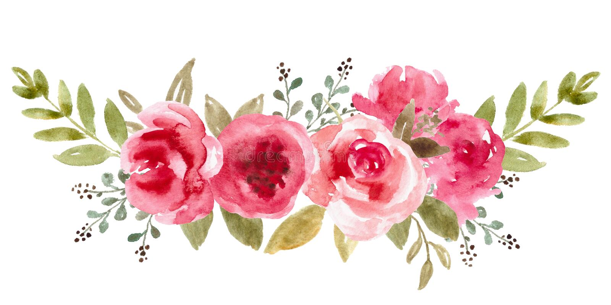

Flower Poems:
Flowers
by Wendy Cope
Some men never think of it.
You did. You’d come along
And say you’d nearly brought me flowers
But something had gone wrong.
The shop was closed. Or you had doubts —
The sort that minds like ours
Dream up incessantly. You thought
I might not want your flowers.
It made me smile and hug you then.
Now I can only smile.
But, look, the flowers you nearly brought
Have lasted all this while.
Please Don’t
by Tony Hoagland
Tell the flowers—they think
the sun loves them.
The grass is under the same
simple-minded impression
about the rain, the fog, the dew.
And when the wind blows,
it feels so good
they lose control of themselves
and swobtoggle wildly
around, bumping accidentally into their
slender neighbors.
Forgetful little lotus-eaters,
solar-powered
hydroholics, drawing nourishment up
through stems into their
thin green skin,
high on the expensive
chemistry of mitochondrial explosion,
believing that the dirt
loves them, the night, the stars—
reaching down a little deeper
with their pale albino roots,
all Dizzy
Gillespie with the utter
sufficiency of everything.
They don't imagine lawn
mowers, the four stomachs
of the cow, or human beings with boots
who stop to marvel
at their exquisite
flexibility and color.
They persist in their soft-headed
hallucination of happiness.
But please don't mention it.
Not yet. Tell me
what would you possibly gain
from being right?
Praying
by Mary Oliver
It doesn’t have to be
the blue iris, it could be
weeds in a vacant lot, or a few
small stones; just
pay attention, then patch
a few words together and don’t try
to make them elaborate, this isn’t
a contest but the doorway
into thanks, and a silence in which
another voice may speak.
Song for Nobody
by Thomas Merton
A yellow flower
(Light and spirit)
Sings by itself
For nobody.
A golden spirit
(Light and emptiness)
Sings without a word
By itself.
Let no one touch this gentle sun
In whose dark eye
Someone is awake.
(No light, no gold, no name, no colour
And no thought:
O, wide awake!)
A golden heaven
Sings by itself
A song to nobody.